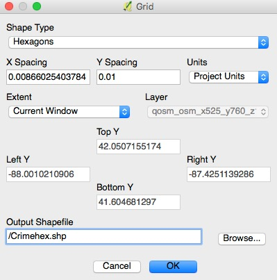
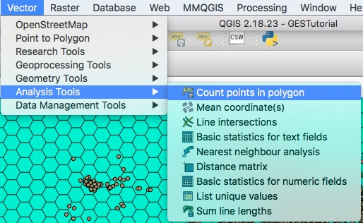
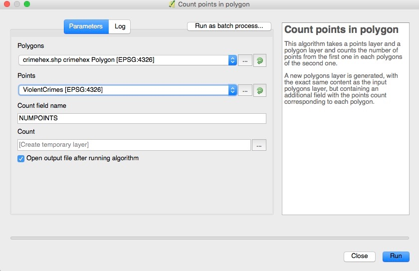
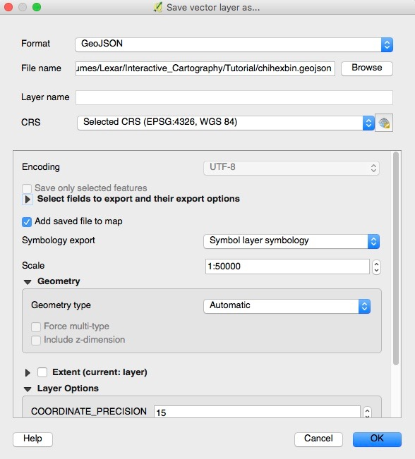
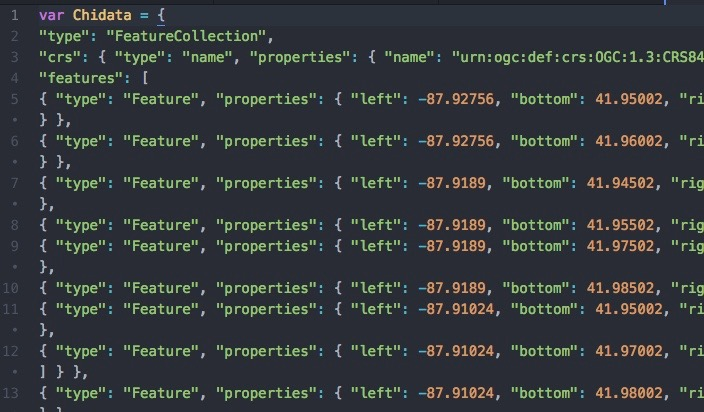

Hexbin Mapping
Overview
In this tutorial, we will explore how to change point data into a polygon chloropleth map, using hexagonal binning. We will then create a map using GeoJSON data. We will be examining violent crime (homicide, battery, assault, and sexual assault) for the city of Chicago, in 2018.
Click here to download the data. Extract the data to your desired directory.
Download the MMQGIS Plugin
First, begin by opening QGIS. Then, in order to perform hexagonal binning, we will need to download a QGIS plugin that allows us to do so. In the menu bar under Plugins select Manage and Install Plugins... Search for MMQGIS and click to install the plugin. If done correctly MMQGIS should now be displayed in the menu bar.
Upload the Shapefile Data
Once the plugin is installed you can now upload the Chicago "ViolentCrimes" point file. Make sure to select WGS84 as your coordinate system. There are a great deal of points, so this may take a while to fully display. (I named the point file "ViolentCrimes")
Creating the Bins
To start select MMQGIS in the menu bar and scroll down to Create and the select Create Grid Layer. Then select the following parameters and save the layer to the desired folder. Let's name the shapefile "crimehex".
 Once the hexagon polygon file is created, in the TOC, you can move the point file over the hexagons for a better view of what's going on.
Next, navigate to Vector in the menu bar and scroll down to Analysis Tools. Then select Count points in polygon.
In the parameters box use the settings displayed below. This process is essentially counting all of the points (from the crime point layer) that reside in each hexagon and assigning each polygon a count value. You have to option of saving the layer to a directory or creating a temporary file and saving it later. Choose whichever method you like! Hit Run.
Once the process has run, a new hexagon layer will display over the point layer containing the counts. In order to get those counts to display, we will need to change the symbology. Open the new hexagon layers Properties, and change the symbol style from Single symbol to Graduated. Then imput the following parameters below.
Feel free to try and experiment with the different classification methods. Natural Breaks (Jenks) was chosen for this situation. IMPORTANT! In to order to only display the hexagons with values in them, we will have to set the lowest value range at 1 instead of 0.
The final step in QGIS is to save the new hexbin layer as a GeoJSON. In order to preserve the symbology you MUST select to export the symbology as well. Make sure to set the coordinate system to WGS84 when doing so. After saving, QGIS can be closed.
Making the Map
Open your desired code editor and add the following lines to prepare your page (you may copy and paste). The script in the head is the link to the Leaflest CSS file and the Leaflet JavaScript file. The script in the body sets up the map center, zoom and basemap.
<!DOCTYPE html>
<html>
<head>
<title>Hexbin Mapping Tutorial</title>
<link>rel="stylesheet" href="https://unpkg.com/leaflet@1.3.4/dist/leaflet.css"
integrity="sha512-puBpdR0798OZvTTbP4A8Ix/l+A4dHDD0DGqYW6RQ+9jxkRFclaxxQb/SJAWZfWAkuyeQUytO7+7N4QKrDh+drA=="
crossorigin=""/>
<script> src="https://unpkg.com/leaflet@1.3.4/dist/leaflet.js"
integrity="sha512-nMMmRyTVoLYqjP9hrbed9S+FzjZHW5gY1TWCHA5ckwXZBadntCNs8kEqAWdrb9O7rxbCaA4lKTIWjDXZxflOcA=="
crossorigin=""></script>
#map {
min-height: 100%;
}
</script>
</head>
<body>
<div> id="map"></div>
<script> type="text/javascript">
var map = L.map('map', {
center: [41.83,-88.01],
zoom: 11
});
L.tileLayer('http://{s}.tile.openstreetmap.org/{z}/{x}/{y}.png', {
attribution: '@ <a> href="https://www.openstreetmap.org/copyright">OpenStreetMap</a> contributors',
}).addTo(map);
</body>
</html>Save the document as HexbinTutorial.html to your desired directory. As a reminder, you will need to TYPE the file extension as .html for it to properly function.
Next, we will import the GeoJSON file. In your code editor, open the GeoJSON file you created for the hexbin layer. I used the name Chidata to define the data variable, but you may use whatever name you deem worthy!
Once you've defined the variable, you can save the GeoJSON as a .js file.
Adding the .js file and adjusting the symbology
In the head section, just below the JavaScript link copy, add the script to reference your data .js file.
<script src="ChiCrime.js"></script>Now that your JavaScript file is referenced in your html document, you can begin to change the symbology. We can do that, as we've done in previous labs, by adding the getColor function and the style. These functions should be added in the body, per usual.
function getColor(value) {
return value < 30 ? '#edf8e9':
value < 96 ? '#bae4b3':
value < 191 ? '#74c476':
value < 329 ? '#31a354':
value < 629 ? '#006d2c':
'#006d2c';}
function style(feature){
return {
fillColor: getColor(feature.properties.NUMPOINTS),
weight: 2,
opacity: 1,
color: 'black',
fillOpacity: 1
};
}Using the ranges from the grauated color symbology, from QGIS, I was able to set the color ranges for the hexgon layer. I used a green color pallet from Color Brewer to symbolize the crime.
The final step to get the data to display is simply adding the Chidata using the L.geoJson function. If done correctly your hexbin data should be displayed over your basemap!
L.geoJson(Chidata, {style:style}).addTo(map);Adding a Title
For fun I decided to add a title to the map which, you may or may not want to do yourself. If so, add this portion of script to the head section, under the ChiCrime .js reference :
<script type="text/css">
html, body {
margin: 0;
padding: 0;
height: 100%;
}
#map {
min-height: 100%;
}
.title {
padding: 6px 8px;
font-family: 'sans-serif';font-size: 22px;
background: white;
background: rgba(255,255,255,0.8);
box-shadow: 0 0 15px rgba(0,0,0,0.2);
border-radius: 5px;
}
</style>
Then add this script to the body section, after the L.geoJson:
var title = L.control({position: 'topright'});
title.onAdd = function (map) {
this._div = L.DomUtil.create('div', 'title');
this._div.innerHTML = "<h3>Hexbin Mapping</h3>";
return this._div;
};
title.addTo(map);
Here is my final map where you can generate the source code .